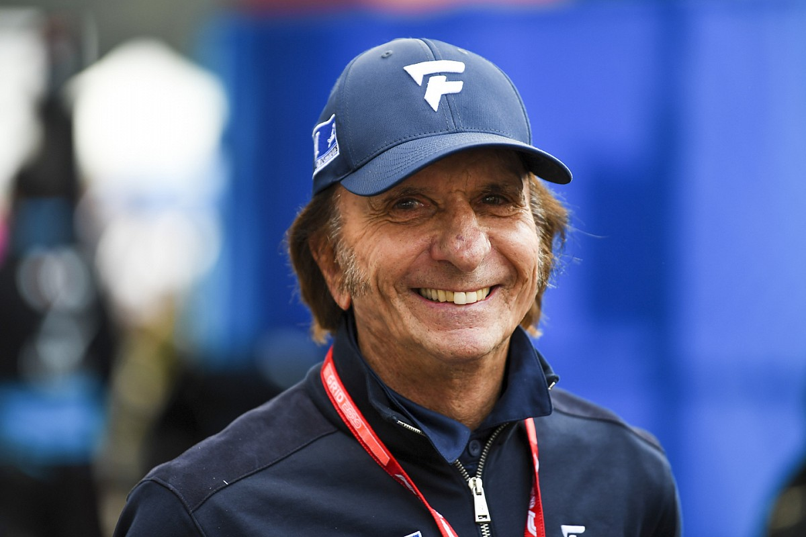
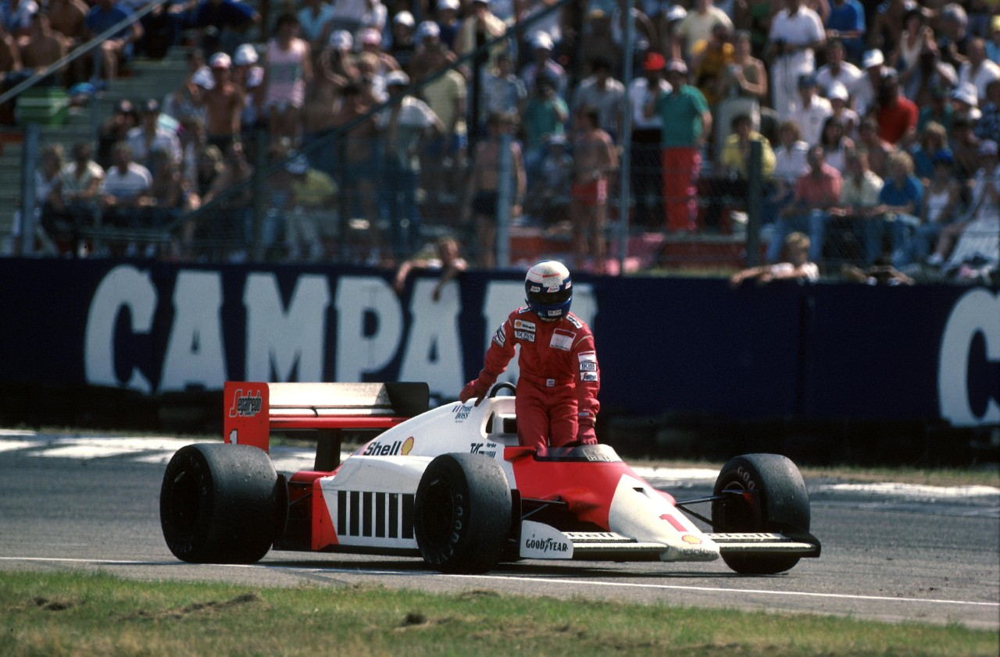

Emerson Fittipaldi1946-ban született a
Brazíliában lévő São Paulo városban. 1970-ben kezdte a Forma
1-ben a Lotusnál, ahol a harmadik számú pilóta volt, John Miles és
Jochen Rindt mellett. 1970-ben pedig már jött az első siker, amikor is
segített csapattársának Rindt-nek hogy a Lotussal
vb győztes legyen.
1972-ben sikerült megnyernie élete első világbajnoki címét a Lotussal és
1974-ben pedig már a McLarenhez igazolt.
A Mclaren-es korszaka
A csapatnál 3 évig volt, egészen 1976-ig, de ezek az évek alatt nagyon
sokat segített a csapat fejlődésében.
Az első évében már világbajnok lett a friss brit csapattal. Aztán 1975 és
76-ban "csak" második lett és ezek után már csak 4 évet maradt a Forma
1-ben és 1980-ban bejelentette a visszavonulását.
"Mindig is a legjobb akartam lenni." "Tudtam hogyha jöttek mellettem jobbról, hiszen ezt mindig
megéreztem."
Niki Lauda
Niki LaudaBécsben született 1949-ben. A sportágban 1971-ben
kezdte a March nevű istállónál.
Két időszaka volt a Forma 1-ben, elöbbi 1971 és 79 között, majd utóbbi
1982 és 85 között. Az ő karrierje elég csendesen kezdődött, viszont azt
kevesen tudják, hogy hatalmas hiteleket vett fel osztrák bankoktól, hogy
tudjon versenyezni a sportágban. Ez az összeg körülbelül az ő elmondása szerint több, mint 100000 dollár
volt.
A fordulat
1974 jött a fordulat, hiszen leigazolta a Ferrari. Náluk 1975-ben meg i
szerezte az első világbajnoki címét és 1977-ben újra diadalmaskodott.
Viszont 1976-ban a német nagydíjon nagyon közel volt a tragédiához. Miután
felszáradt a versenyen a pálya, kiment kereket cserélni, viszont a gumik
nem melegedtek fel rendesen és a Ferrari megcsúszott egy szalagkorlátnak
ütközött és kigyulladt. Lauda benne égett az autóban és a Nürburgringen
nagyon sok időbe telt, míg kiszedték az autóból. Szerencsére Lauda túlélte
és folytathatta a versenyzést, egy hónapra rá pedig vissza is jött az
olasz nagydíjra.
A McLaren-nél
Miután visszatért a sportágba, egyből a McLaren-hez igazolt.
Ő az egyetlen pilóta, aki tudott világbajnoki címet nyerni a Forma 1
történetének két legsikeresebb csapat pilótájaként.
1984-ben meg is nyerte a címet harmadjára és ezt az utolsó versenyen
fél ponttal sikerült behúznia a csapattársa, Alain Prost elött.
1985-ben végleg visszavonult, de egészen 2019-ig a sport nagy rajongója
volt, mellesleg a Mercedes-AMG csapat résztulajdonosa is volt.
2019-ben megfázás után tüdőátültetést kellett rajta részt venni és 2019.
május 20-án családja körében hunyt el.
"Sokan kritizálják a Forma 1-et, mert szerintük egy felesleges
kockázat, ami igaz is, mert évente 2 versenyzőt veszítünk el, de ez
engem nem állít meg." "Egy verseny addig nincsen megnyerve, míg nem érsz be a célba, mert
bármi történhet." "Ne beszélj túl sokat, legyél fókuszált és érd el a célodat."

Alain Prost 1955-ben született a francia Saint-Chamond-ban. 1980 és
1993 között 199 nagydíjon vett részt, ezalatt 51 nagydíjat és 4
világabjnok címet nyert. Ő a versenysorozat 5. legsikeresbb pilótája.
A beceneve pedig a "Professzor" volt.
A debütálástól az első sikerig
1980-ban debütált a McLarennél, de nem volt sok sikere ezért 1981-ben a
Renault-hoz igazolt és ott volt három évig, majd visszagigazolt újra a
McLaren-hez 1984-ben, de mostmár jobban sikerültek az eredményei. 1985, 86
és 89-ben világbajnok lett.
A sikerek után átigazolt az örök rivális Ferrarihoz. Itt már sajnos nem
tudott jól szerepelni és 1991-ben bejelentette visszavonulását, ekkor még
nem tudta senki, hogy egyszer majd visszatér.
A visszatérés a Williams-hez
1992-ben távol volt a sporttágtól, viszont a
szezon közben kapott egy potenciális szerződést a
Williams-hez és ezt ő el is fogadta.
Az utolsó szezon álomszerűen sikerült, legyőzte Ayrton Sennát és
ezzel ő lett a 2. ember aki 4 világbajnoki címet tudott nyerni, a
hihetetlen Juan Manuel Fangio után. Ez volt sajnos az utolsó dobogó, amelyiken Alain Prost és Ayrton Senna
szerepelt.
"Akik kritizálnak, azok nem lesznek azok, akik segítenek, mikor eltöröd
a lábadat egy futamon és kerekeszékbe kerülsz."
Ha nem figyelsz, elveszítheted a látásodat, ilyenkor lehet lesz egy
autó elötted, lehet nem, ez már nem rajtad múlik. Lehet emberek nem értik, de nekem az a legnagyobb öröm, mikor egy Forma
1-es autót esőbe vezethetek.
Ayrton Senna
Ayrton Senna 1960-ban a brazil São Paulo-ban született. Ő neki volt
talán a Forma 1 történetében a legizgalmasabb útja, de a legtragikusabb
vége a karrierjének.
Senna nem egy nagy csapatnál kezdte, hanem a Toleman-nél kezdte a
pályafutását, ami egy egész kicsi csapat volt a Williams és a McLaren-hez
képest. Már az első évében megmutatta, hogy mire képes.
Első pontját már a második futamján a
Dél-Afrika-i Kyalami-ban szerezte.
1985-ben a Lotus-hoz igazolt és ott versenyzett 1987-ig.
A sikeres McLaren-es évek
1988-ban megnyerte első világbajnoki címét a francia csapattárs
Prost elött.
1989-ben a japán nagydíjon Prost-tal ütköztek,
mind a ketten kiestek (Sennát diszkvalifikálták) és így Prost lett a
világbajnok.
1990-ben ugyan ez megtörtént, viszont most Senna direkt nekiment
Prost-nak, így ő lett a világbajnok. Ezek után az FIA betiltotta azt, hogy
ha világbajnokság múlik egy versenyen, akkor direkt tilos ütköznie a kettő
világabjnoki aspiránsnak.
1991-ben simán megnyerte a bajnokságot, így már 3 szoros világbajnok volt, de 1992 és 1993-ban képtelen volt a McLaren a jó autó gyártására, így Senna elment a Williams-hez.
Átigazolt a Williams-hez 1994-ben, viszont itt már csak 3 versenyt tudott menni, hiszen 1994 május elsején az Imola-i futam 7. körében a Tamburelo kanyarban elveszetette az autó felett az irányítást, kicsúszott és a falnak csapódott.
Sajnos nem lehetett megmenteni az életét. Ezzel megrázta egész Brazíliát és az egész Forma 1-et.
Temetésén több, mint 250000 jelentek meg és a koporsóját a Forma 1 legsikeresebb pilótáják vitték. "Ha második vagy, akkor te vagy az első, aki veszített." "Nincsenek példaképeim, én vagyok a példakép." "A versenyzés és a versengés benne van az ereimben."
és a leghíresebb mondata: "If you no longer go for a gap that exists, your are no longer a racing driver."
azaz
Ha már nem használsz ki egy létező ívet, akkor már nem vagy autóversenyző.
Ayrton Sennát 2000-ben bekerült a Nemzetközi Motorsportok Hírességeinek Csarnokába.
 Niki Lauda Bécsben született 1949-ben. A sportágban 1971-ben
kezdte a March nevű istállónál.
Niki Lauda Bécsben született 1949-ben. A sportágban 1971-ben
kezdte a March nevű istállónál.  1984-ben meg is nyerte a címet harmadjára és ezt az utolsó versenyen
fél ponttal sikerült behúznia a csapattársa, Alain Prost elött.
1984-ben meg is nyerte a címet harmadjára és ezt az utolsó versenyen
fél ponttal sikerült behúznia a csapattársa, Alain Prost elött.

 már a második futamján a
Dél-Afrika-i Kyalami-ban szerezte.
már a második futamján a
Dél-Afrika-i Kyalami-ban szerezte.